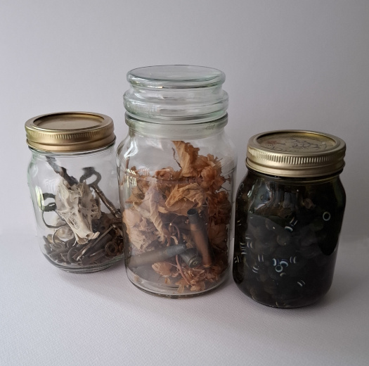

Sewing machines and umbrellas; razors and eyeballs; Liz Truss and Number 10; for years surrealist provocateurs have thrown together unlikely combinations with the aim of disturbing us from our comfortable worlds and, by invoking subconscious artifacts exposed from the dream realm, break the barriers between this world and possible futures. These jars, named after the Czech animator Jan Svankmajer, combine this technique with recollection to break us away from memory’s capitalist yearnings and act as a set of batteries to charge us into new spaces where memory is less destructive. To make one, simply take two unrelated types of objects from your past, preferably of no remaining capitalist value and yet of heightened nostalgic importance. Place them in an old jam jar, and put them on a shelf or other prominent position around your house; meditating on them each time you see them, forcing yet new meanings from their otherwise random combination. Anything will do: nails in marmalade; confetti and crab shells; tampons and tea lights. Meditating on such combinations will bring you to a new logic, in which the importance of everything you have previously been told you need to struggle for to scaffold your life falls away, and a new oneiric logic, refounded on memory, forms; a logic suitable for building new and uncanny edifices that stride across your life and wildly indicate towards each torch-lit new horizon.
|
 Three Svankmajer Jars (2025)
|